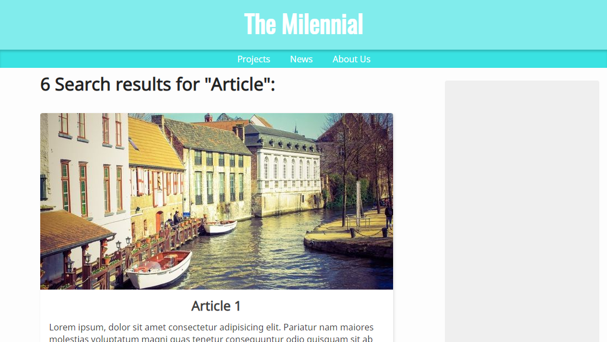

SVG Site
Nesse site eu estava experimentando novas técnicas em CSS e a utilização de desenhos e backgrounds com linhas com movimento. Resultando num design simples mas interessante.

Round Icons
Ícones redondos que podem ser utilizados em qualquer tipo de projeto desenhados em vector graphics que facilmente podem ser exportados como SVG e PNG.
Blog em Material Design
Utilizando material design eu tentei recriar um blog com estilo clássico com uma forma mais moderna e agradável. Com a habilidade de reter tanto users mais novos como os mais antigos.

Blog post
Eu criei essa página com a meta de criar um site estilo blog minimalista e fácil de ler.
Ela também inclui cartões que se adaptam com um novo design ao tamanho da tela e sem nem um @mediaquery.

Search Page
Pagina de pesquisa de um blog com estilo leve e agradável.

Site de Noticias
Site de noticias cheio de imagens, com conte√∫do real√ßado para os usuários em qualquer tipo de plataforma. Somente com um @mediaquery üòÆ.

Front-Page Moderna
Uma front-page com design que facilmente se comunica com o usuário de forma moderna e interessante.
Light Data Website
Data-driven design (design voltado á informação) onde eu criei um site com design leve onde o usuário pode observar uma página cheia de informação mas sem se sentir desconfortável.
Artigo Sério
Eu estava experimentando algumas fontes serif pra dar um tom mais sério em sites. A seção de comentários está feia porque só existe pra me lembrar da estrutura.